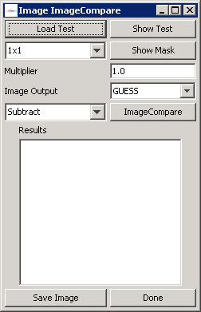

Even though to the human eye two images look the same there can be some minute differences, this dialog will allow the user to select a comparison method to compare two images and visualize the minute differences between the images. The tool will allow the user to load a test image, a mask (or use a predefined mask) and test method, as well as a multiplier for the result image and the type of the result image.

Figure: Image Compare Dialog.
The dialog shows all these options. To perform a comparison the user must first select an image to compare the current image in the mainfram against using the "Load Test" button. This will show a dialog allowing the user to load an image. To make sure the right image is loaded the user can show the test image using the "Show Test" button.
Next the user has to decide which mask to use. The user can use one of the predefined masks or load a custom mask. The predefined mask will create a mask image that splits the original image in squares of the selected size, from 1x1 (pixel) to 100x100 size squares. If the user selected "Load Mask" a dialog will appear allowing the user to load an image to be used as a mask. Only the first band of this mask image wil be used! The user can check the mask by clicking on the "Show Mask" button. Some masks however don't work well with certain comparison methods (for instance pixel (or 1x1) does not work with histogram test.
Next the user has to select which test to use. The user can choose one of the following test:
Finally the user can use the Multiplier and Image Output fields to select what imagetype the resulting image will be and what multiplier needs to be used when comparing the images. For instance to create an BYTE image of the Histogram we need a multiplier of 255 since the original range of values will be between 0 and 1.
The user can save the result of the comparison as an image using the "Save Image" button.